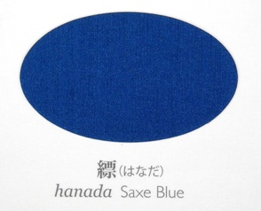

lo nenri be lo spati denmi
fi'e la .aktagaun.riunosuk.
sei la .guskant. fanva
ni'o
di'e fi lo poi lo pulji cu te preti fo ke'a ku'o tricu katna se jibri cu lisri
.i tu'e
la'e po do di'u jetnu
.i
lo pu co'a sanji be lo de'u morsi xadni cu me mi je'u
.i
mi ta'e ca ji'a lo zi cerni te zu'e lo nu katna lebna lo trixe cmana ckunrsugi to'i sa'a lo ckunrsugi cu du la'o ly Cryptomeria japonica ly toi [ckunrsugi] cu klama pu ki
.i ce'o
co'a sanji lo nu ne'i lo cmana ctino ke spati denmi lo de'u morsi xadni ca'a zvati
.i
pau pei zvati ma kau
.i
la'a ri darno lo la .iamacinan. dargu la'u li ji'i vo bi'i mu te la'u lo gutcrtcou to'i sa'a pa gutcrtcou cu mitre li ji'i pa no so toi [gutcrtcou]
.i
sei ne'i loi spatrtake to'i sa'a lo spatrtake cu du la'o ly Arundinarieae ly noi tricu me la'o ly Bambusoideae ly gi'e xabju lo glare milxe foldi
sei tu'a la'o ly Arundinarieae ly bu'u la'o zoi Non-monophyly of the woody bamboos (Bambuseae; Poaceae): a multi-gene region phylogenetic analysis of Bambusoideae s.s.
Sarawood Sungkaew, Chris M. A. Stapleton, Nicolas Salamin and Trevor R. Hodkinson
Journal of Plant Research, 2009, Volume 122, Number 1, Pages 95-108 zoi se cusku toi
[spatrtake] loi cinla ckunrsugi fe'e ru'i nai zvati
va'o lo nu tu'a no prenu cu se ganse ku stuzi
.i
lo morsi xadni noi ca'a dasni lo blanrxanada 
to'i sa'a sitna la'o py 太田 耕嗣 『源氏物語 千年の色: 単色』, 太田工芸, 京都, 2005 py toi [blanrxanada] crekrsuikanu 
to'i sa'a sitna la'o py æ± ä¸Š 良太 『図解 日本の装束』, 新紀元社, 東京, 2008 py toi [crekrsuikanu] .e lo tcadu bo morna je cinje mapkrxeboci
to'i sa'a sitna la'o py æ± ä¸Š 良太 『図解 日本の装束』, 新紀元社, 東京, 2008 py toi [mapkrxeboci] ku'o
ca'a gapru be fa lo betfu be'o vreta
.i
ro bu'a zo'u se gu bu'a
sei ku'i pa po'o mei dakfu
gi lo cutne midju cu se tunta je se xrani
.i se ri'a bo
loi morsi xadni jibni ke spatrtake ke farlu pezli cu nuknrsuxou
to'i sa'a sitna la'o py 太田 耕嗣 『源氏物語 千年の色: 単色』, 太田工芸, 京都, 2005 py toi [nuknrsuxou] cinta jinru pe'a
.i
na'i lo ciblu ba'o rinci
.i
lo xrani moklu pe'a ji'a ca'a sudga za'a
.i ji'a ba'a nai
bu'u ri pa xirma sfani to'i sa'a lo xirma sfani cu sfani la'o ly Oestridae ly toi [xirma sfani] sei za'a vo'a lo mi cadzu sance na tirna
ca'a snipa je batci
.i
pau pei xu kau lo barda dakfu .a lo simsa na se viska
.i
na'i no da zvati
.i ku'i
bu'u lo pe ne'a ta ckunrsugi genja jibni lo skori ca'a pa mei je vreta
.i ji'a
sei sa'a ze'i smaji se'u
ba'a nai bu'o lo na'e skori no'u ji'a lo komcu ca'a pa mei je zvati
.i
loi zvati be ne'a lo morsi xadni cu po'o me ri .e ra vu'o noi re mei
.i ku'i
loi srasu .a loi spatrtake ke farlu pezli fe'e ru'i vi'a se stapa je se daspo ba'o
.i se ki'u bo ju'o
le nanmu pu lo mu'e se catra cu mutce carmi tolcando
.i
ki'a pau pei xu kau lo xirma na zvati
.i
ta je'u lo'e xirma na'e ka'e se nenri
.i ri'a bo nu
ro bu'a zo'u se gu bu'a
gi fe ta fi lo xirma klama dargu fa lo spati denmi pa mei cu bitmu
tu'u
{kind=link}
{kind=link}